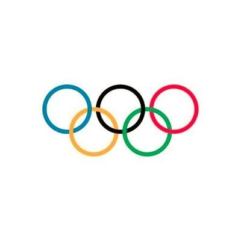

RT @Olympics: Licence to thrill... with a world record performance on ice. 🎉💪
15 years ago today Yuna Kim delivered an incredible display…

The Olympic Games
@Olympics
Licence to thrill... with a world record performance on ice. 🎉💪
15 years ago today Yuna Kim delivered an incredible display in the women's figure skating short program for Republic of Korea en route to taking gold at Vancouver 2010.